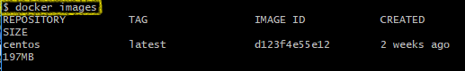
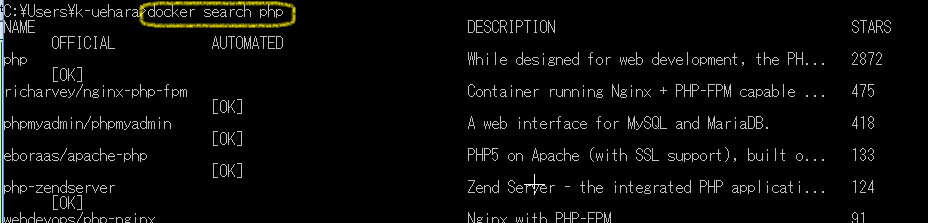
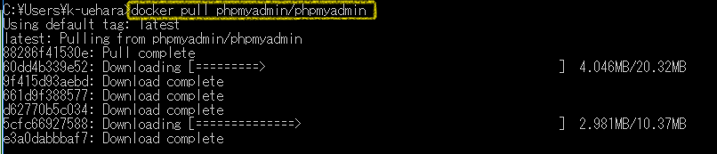
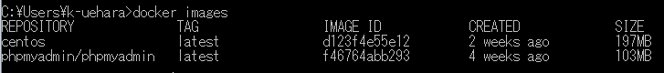
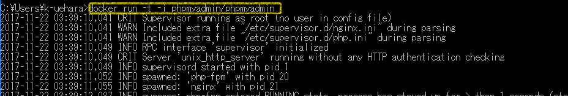
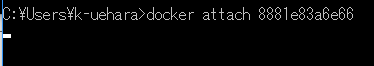
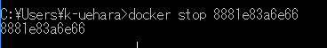
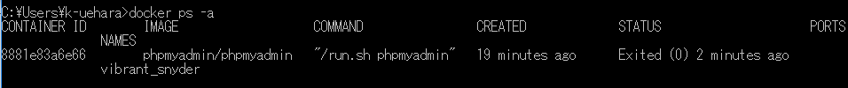
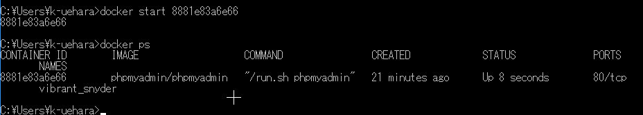

| コマンド | 説明 |
|---|---|
| $ docker images | 保持しているイメージ一覧を表示。 |
| $ docker search パッケージ名 | Docker Hubからイメージを検索する。 |
| $ docker pull phpmyadmin/phpmyadmin |
Docker Hubからイメージをダウンロードする。 例ではphpMyAdminをDocker Hubからダウンロード。 |
| $ docker image list | ダウンロードして保持しているイメージ一覧を表示。 |
| $ docker run -t -i centos | イメージからコンテナを生成および実行状態にする。(例：centosのダウンロード) |
| $ docker create -it centos | コンテナのダウンロードだけ行い、実行はしない。(例：centosのダウンロード) |
| $ docker start コンテナIDもしくはコンテナ名 | コンテナを動かす。 |
| $ docker exec -it コンテナIDもしくはコンテナ名 bash -c "任意のコマンド" | コンテナに接続。アタッチ状態にする（コンテナ内に入る）。 |
| $ docker attach コンテナIDもしくはコンテナ名 | アタッチ状態にする（コンテナ内に入る）。なぜか止まることが多いので、docker execコマンドを使ったほうがいいかも。 |
| $ docker ps | 稼働中のコンテナ一覧を表示する。 |
| $ docker ps -a | 停止中のコンテナ一覧も表示。 |
| $ docker stop コンテナ名もしくはコンテナID | コンテナを停止する。 再び動かすには「docker start xxxxx」。 |
| $ docker inspect コンテナ名もしくはコンテナID |
コンテナの詳細情報を表示する。 マウントしているボリュームや、割り当てIPアドレスなどいろいろな情報が確認可能。 |
| $ docker stop $(docker ps -a -q) | コンテナをすべて停止する。 |
| docker rm $(docker ps -a -q) | コンテナをすべて削除する。 |
| docker start $(docker ps -a -q) | コンテナをすべてスタートする。（停止中のコンテナをすべて再起動） |
| #ip a |
IPアドレスすを確認する。（docker execでアタッチ後）
[lancers@app ~]$ ip a
1: lo: <LOOPBACK,UP,LOWER_UP> mtu 65536 qdisc noqueue state UNKNOWN group default qlen 1000
link/loopback 00:00:00:00:00:00 brd 00:00:00:00:00:00
inet 127.0.0.1/8 scope host lo ←ローカルIPアドレス（物理NIC)
valid_lft forever preferred_lft forever
2: tunl0@NONE: <NOARP> mtu 1480 qdisc noop state DOWN group default qlen 1000
link/ipip 0.0.0.0 brd 0.0.0.0
3: ip6tnl0@NONE: <NOARP> mtu 1452 qdisc noop state DOWN group default qlen 1000
link/tunnel6 :: brd ::
18: eth0@if19: <BROADCAST,MULTICAST,UP,LOWER_UP> mtu 1500 qdisc noqueue state UP group default
link/ether 02:42:0a:64:06:0b brd ff:ff:ff:ff:ff:ff link-netnsid 0
inet 10.100.6.11/12 brd 10.111.255.255 scope global eth0←仮想IPアドレス？（仮想NIC？)
valid_lft forever preferred_lft forever
|
| docker network ls |
Docker ネットワーク一覧を表示する
$ docker network ls NETWORK ID NAME DRIVER SCOPE 25bdf8f0a638 bridge bridge local 8fb76d054ec2 frontend_default bridge local 8967df4354b4 host host local d6ffaa0b27d7 none null local |
| docker network inspect 「Dockerネットワーク名」 |
Dockerネットワークの詳細情報を表示。 このDockerネットワークを使用しているコンテナも一覧表示している？ |
| docker network create --driver=bridge --subnet=20.200.0.0/12 --gateway=20.200.0.1 「任意のDockerネットワーク名」 | Dockerネットワークを作成する。 |
| docker network rm 「Dockerネットワーク名」 | Dockerネットワークを削除する。 |
| docker network prune | 名前のない未使用なDockerネットワークを削除する。 |
| docker network connect --ip 192.168.0.300 Dockerネットワーク名 コンテナ名 | コンテナとDockerネットワークを接続する。 |
| docker network disconnect Dockerネットワーク名 コンテナ名 | コンテナとDocekrネットワークの接続を解除する。 |
ERROR: for mysql Cannot start service mysql
ERROR: for mysql Cannot start service mysql: Ports are not available: listen tcp 0.0.0.0:3306: bind: Only one usage of each socket address (protocol/network address/port) is normally permitted. Encountered errors while bringing up the project.
$ docker network ls NETWORK ID NAME DRIVER SCOPE a24920520378 bridge bridge local 8fb76d054ec2 frontend_default bridge local 8967df4354b4 host host local d6ffaa0b27d7 none null local
Docker CE for Windows → Docker Desktop for Windows
2019年11月の時点で「Docker Desktop for Windows」に変更されている。旧インストール手順
PC環境はWindows10,64bit。Docker CE for Windowsのインストール手順
イメージの置き場所
複数のイメージをDockerに保持することができる。$ docker images
どこからイメージを取ってくるか？
Docker Hub という他の人が作成したイメージをまとめたWebサイトが存在する。 Docker Hubから「docker search」コマンドを使い、イメージを検索することができる。$ docker search php
イメージをどうやって取ってくるか？
「docker pull」コマンドでDocker Hub からイメージを引っ張ってきて取得できる。$docker pull phpmyadmin/phpmyadmin
$docker image list
$ docker run -t -i phpmyadmin/phpmyadmin
| docker runのオプション | 説明 |
|---|---|
| -t | 疑似TTY※1を割り当てる。 |
| -i | 起動時に STDOUT を開きっぱなしにする。 STDOUTとは標準出力のこと。（コマンドプロントでは指定しなくても変化がみられず） |
$ docker attach 8881e83a6e66
稼働中のコンテナ一覧を確認する方法
「docker ps」コマンドで稼働中のコンテナを確認できる。コンテナを停止する
「docker stop コンテナID」コマンドで稼働中のコンテナを停止することができる。 なお、コンテナを停止しても削除されているわけではない。あくまで停止中であり、再スタートすることができる。（後述）$ docker stop 8881e83a6e66
停止中のコンテナを一覧表示する。
「docker ps -a」コマンドで停止中のコンテナを一覧表示させることができる。$ docker ps -a
停止中のコンテナを動かす
「docker start コンテナID」コマンドで停止中のコンテナを再稼働させることができる。$ docker start 8881e83a6e66
DockerでEclipse Cheインストールする手順
docker run -it --rm -v /var/run/docker.sock:/var/run/docker.sock -v <path>:/data eclipse/che start
docker run -it --rm -v /var/run/docker.sock:/var/run/docker.sock -v c:/Users:/data eclipse/che start
docker run -it --name test_name -p 8080:80 -v c:/Users/user_xxx/git:/var/www/html test_image:5.6
| 引数 | 説明 |
|---|---|
| --name test_name | コンテナ名を指定する。コンテナ名は任意で名前をつけることができる。 省略可能だが名前を付けたほうがコンテナ操作するときに便利。 省略した場合はコンテナIDを指定してコンテナ操作をしなければならない。 |
| 「-p 8080:80」 |
Docker環境にアクセスするときに指定するポート番号である。 ブラウザに「http://localhost:8080」を入力することによりローカルのDocker環境にアクセスすることができる。 |
| v c:/Users/k-uehara/git:/var/www/html | Windowsのディレクトリ（c:/Users/user_xxx/git）と Docker上のディレクトリ（/var/www/html）を関連づける。 Windowsのディレクトリは、Windows for Dockerでマウントしている「c:/Users」から下のディレクトリのみ指定可である。 |
| test_image:5.6 | イメージ名：バージョン。イメージIDを指定することもできる。 |